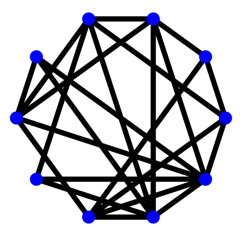
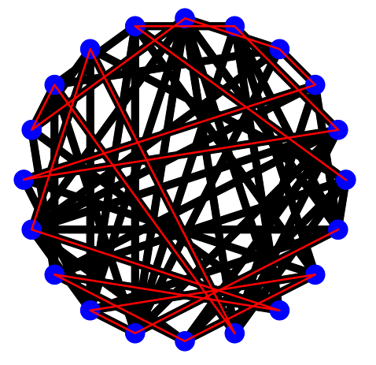

Final Project: Solving NP Complete Problems
Chris Tralie
Overview
We suspect that NP complete problems are harder than problems in P, but we don't know for sure. Usually, though, the fact that a problem is NP complete is enough for people to throw up their hands and say we can't solve it. But what if we actually do want to solve it for some practical purpose? What options do we have available to us?
In this project, you will explore one strategy for solving NP complete decision problems via polynomial time reductions. To accomplish this, you will devise a reduction from an NP complete problem of your choosing to an instance of SAT. Since SAT is itself an NP-complete problem, you can use it to solve any problem in NP, including other NP-complete problems. Thus, you will use SAT to decide your problem, and as a side effect, you will be able to extract a solution to your problem instance if it is satisfiable. The steps you will need to do are as follows:
- Create a method to generate random instances of your problem of a certain size.
- Polynomial time reduce your problem to SAT; that is, generate a CNF boolean statement that, if solved, will provide a solution to your problem.
- Convert the SAT solution back into a certificate in the language of your problem, and create a verifier that checks whether the certificate is a valid solution to a problem of your type.
We will then have a class competition to see who can generate the hardest problems instance of SAT, as measured by average runtime. Clear winners may receive some extra credit.
Note that you can choose any NP complete problem from Sipser chapter 7 other than Hamiltonian path (since I'm giving that example), but you are not limited to those problems. Click here to view a longer list of NP complete problems. Examples from the book include vertex cover, k-clique, and subset sum.
Below are some more details about the three tasks you have to do:
Part 1: Generating (Pseudo)Random Solvable Problems (25 Points)
You will have to make a (pseudo)random problem of size N, where N depends on the context of the problem. For instance, in an NP-complete graph such as Hamiltonian path, vertex cover, or k-clique, N is the number of nodes in the graph. Your random problems should be solvable; that is, it should be possibly to satisfy the CNF clauses that you generate for your problem.
Other Parameters: Aside from N, you may have some extra parameters to set for your problem. For instance, for Hamiltonian path, you have the number of edges, for vertex cover, you have the size K of the number of vertices that are supposed to be part of the cover, and for a K-clique, you will have the size K of the clique we're looking for. You can choose these extra parameters to be whatever you like, but to be competitive, you should think carefully about what a "hard" problem of your type would look like. For example, intuitively, graphs with very few edges might be easier to check for the Hamiltonian path problem since there are fewer possibilities. However, too many edges might be too easy as well, since that increases the number of options in which a Hamiltonian path could occur. Often, the sweet spot of hardest complexity is somewhere in the middle.
Part 2: Polynomial Time Certificate Translation (50 Points)
Perform a reduction from your problem to SAT in polynomial time in the size of the problem. The number of certificates you add should also be polynomial size in your input. This is definitely the trickiest part of the assignment, and it's where the art comes in. I'll show you an example of how to do this with the Hamiltonian path problem.
Part 3: Polynomial Time Checking (25 Points)
You will have to implement the functionality to translate a SAT certificate into a certificate for your problem, and then you should implement a polynomial time verifier to make sure this certificate corresponds to a real solution.
Codebase
Getting Started
Click here to download the starter code for this project, which will be written in Java. By default, a Netbeans project has been provided to go along with the code, but you are free to edit the code in the src/ directory in any editor you wish and to run it in the terminal if you would like.
What To Submit
You should stick to the API as much as possible as you're going along. When you're finished, submit a .zip file of all of your code and clearly indicate which files correspond to your new problem. There should be two files: one for the NP complete problem and another for its certificate. Finally, submit a brief description of what algorithm you chose to implement and of the reduction in a separate file (alternatively, document this carefully in comments).
Collaboration Policy
You may discuss the math behind reductions and NP complete problems you're thinking about with any students in the class. When it comes to code, though, there is a "buddy policy" which is the same as that for CS 477. TL;DR, you are only allowed to look at the code of 1-2 other people as you're going along, you must indicate who these people are, and you must submit your own code at the end.
Code Overview
Below is a highlight of a few of the files in this project and how they fit into what you have to do
CNF.java
This file provides a class that encapsulates CNF formulas and SAT solvers. You can mostly treat it as a black box, but if you're curious, I implemented the DPLL algorithm to solve the SAT problem more quickly than a naive brute force implementation.
Below are the instance methods you'll need to use when reducing your problem to SAT:
-
public void addClause(int[] index, boolean[] pos)You use this method to add a particular clause to a CNF object. It takes two parallel arrays: the first holds the indices of the variables and the second holds their coefficients (true is original and false is the negative). For instance, the clause
\[ (x_0 \vee x_3 \vee \neg x_2 \vee x_5) \]could be added to an existing CNF object
cnfwith the code -
public boolean[] solveDPLL()This is the method that implements the aforementioned DPLL algorithm to find an assignment if it exists. If a solution exists, it returns an array of booleans of all assignments across all variables that leads to the CNF being true. Otherwise, it returns
null. -
public String toString()If you print this object, it will show a symbolic representation of the CNF formula using ∨ and ∧, which you can use for debugging. For example, if you had the code
Then the output would be
NPCompleteProblem.java
You will create a child class that extends this class to implement the basic API for an NP complete problem. This class encapsulates all of the functionality you need to generate random instances and to solve them via a reduction. Below are the methods you need to override
-
public String getPseudonym()Return your pseudonym as a String for the competition.
-
public String getDescription()Return a short description of your algorithm for the competition as a String.
-
public makeRandomProblem(int N, long seed)Make a random version of your problem with of size N.
Note also the parameter
seed, which should be used to make sure you get the same (pseudo)random problem instance each time you use the same seed (Click here for the Javadoc API of the method that does this). -
public CNF getCNF()This generates a CNF formula that is satisfiable if and only if your problem is solvable. You'll start with an empty CNF as in the example above, and then you'll add clauses to it one by one to enforce constrains that make your problem your problem. This is where the meat of your work will happen for the reduction.
There's a real art to this, but here are a few suggestions of how to translate some logical statements into CNF form, in which each clause only has OR ∨ operations:
- If you have a logical implication a ⇒ b, or "a implies b,", then you can write that as the CNF clause
\[ (\neg a \vee b) \]
- De Morgan's law may come in handy. Recall that one version of it is
\[ \neg(a \wedge b) = (\neg a \vee \neg b) \]
-
Certain distributive rules work with boolean statements. For instance,
\[ a \vee (b \wedge c) = (a \vee b) \wedge (a \vee c) \]
- You are allowed to have clauses with a single variable (so-called "unit clauses") if that helps!
- Don't be afraid to use a number of variables that's a polynomial factor of N. For instance, in the Hamiltonian path problem, instead of using one variable per graph vertex, I found it easier to use O(N2) variables: one for each path index for each variable.
- Don't implement all of your clauses up front! Instead, implement and check a few types of clauses at a time on small problems that you make.
- If you have a logical implication a ⇒ b, or "a implies b,", then you can write that as the CNF clause
-
public Certificate makeCertificateType(boolean[] vals, int N)This is a wrapper method to construct a certificate of the appropriate type for this problem (see
Certificate.javafor more info)
NOTE: I have also made an intermediate child class GraphProblem.java that you can inherit from if you end up solving another undirected graph problem. This class comes with data structures to store graph info, as well as a method to draw the graph.
Certificate.java
As alluded to above, you also need to extend a class that handles certificates for your problem. The constructor to your certificate should convert from CNF form back into your problem. Then, you should override the method
public boolean satisfiesProblem(NPCompleteProblem npcproblem)
in your certificate class to check whether the certificate you constructed is a valid solution to a particular problem.
Worked Example: Hamiltonian Paths
To give you some more pointers, I've worked through a full example that would that would fulfill all of the project requirements: a Hamiltonian Path reduction (though, of course, you'll have to choose a different problem from Hamitonian Path or Hamiltonian Cycle). The code can be found in HamiltonianPath.java and HamiltonianPathCert.java. In your problem, you should also have two such files.
Generating Random Graphs Containing Hamiltonian Paths
To generate a random Hamiltonian path, I first choose a random permutation using a utility function getShuffledNumbers in NPCompleteProblem.java (FYI this method implements Fisher-Yates shuffling). You can use this method in your random generation if it helps. I then add the N-1 edges implied by this random permutation to ensure that there is a Hamiltonian path in the graph. Next, I add an additional O(N3/2) random edges to make the problem harder.
Below is a picture explaining this graphically

As an example in code, let's suppose we executed the following snippet in the main method of HamiltonianPath.java
Then we'll get the following graph with 10 vertices:
As another example, suppose we have this code
Then we'll get the following graph with 20 vertices:

Hamiltonian Path Certificate Generation
To convert reduce a Hamiltonian path problem into a CNF form, I used O(N2) variables: one for each element in the permutation and one for each possible vertex choice at that permutation index. That is, xij = true if the ith element in the path is vertex j. Then, I had to enforce a number of conditions by constructing O(N3) clauses:
1. Each Graph Vertex Must Appear
Each vertex j must appear in the path more than 0 times (click here to jump to this section in the code). In other words, a clause of the form
must be part of the CNF formula for each j = 1, 2, ..., N.
2. No Vertex Should Appear More Than Once on The Path
Each vertex j must appear at most once in the Hamiltonian path (Click here to jump to this section in code). Written as an implication, this translates into
Converting into CNF form, this is the clause
Note that there are O(N3) of these 2-element clauses
3. At Most One Vertex At Each Path Index
There is at most one vertex at each index i of the path (Click here to jump to code). Written as an implication, this translates into
There are also O(N3) of these 2-element clauses.
4. Every Path Position Must Be Occupied
Every position on the path must have at most one node (Click here to jump to this section of the code)
5. The Edges on The Path Must Be Edges on The Graph
Finally, we'll add clauses that enforce that the edges chosen in the path are actually edges on the graph (Click here to view the code). In implication form, this can be written as
This translates into the following 2-element clauses
Notice that we had to be a bit tricky here since we need ORs in the CNF clauses instead of ANDs.
Verifier
Click here to see code for the certificate constructor and verifier. This uses the same polynomial time verifier we discussed in class that simply makes sure that each vertex shows up once in that path and that each edge in the path is actually in the graph. You can see details in the satisfiesProblem method in HamiltonianPathCert.java.
Putting It All Together
I have implemented a method in the HamiltonianPathCert class that draw the line segments in the certificate on top of line segments of the graph that are already there. If you run the following code
Then you'll get this.

You'll find code like this in the main method of the HamiltonianPath class. For completeness, below is the solution to N = 10, seed = 0 shown before

Feel free to use your own drawing code using the StdDraw API to help you debug in your problem in a similar way.